Maquette de travail GT Com · Section bento 1 : chiffres clés (exemple pour l'accueil ou la page « L'AFES »)
En quelques chiffres

 95 %
95 %

Les sols, et l'AFES
95 %
de l'alimentation provient du sol
Les sols, épiderme de la Terre, sont une ressource non renouvelable à l'échelle humaine.
25 à 60 %
de la biodiversité terrestre se trouve dans les sols
20 000
mégatonnes de carbone séquestrables par les sols en 25 ans

Depuis 1934
au service des sols, et branche française de l'Union internationale de science du sol (IUSS).
2012
premiers webinaires de l'AFES, en accès libre
7
Rendez-vous de l'AFES depuis janvier 2025, pour présenter les projets aux adhérent·es
Chiffres sur les sols : ceux affichés aujourd'hui sur l'accueil d'afes.fr. [N] = chiffre à fournir.